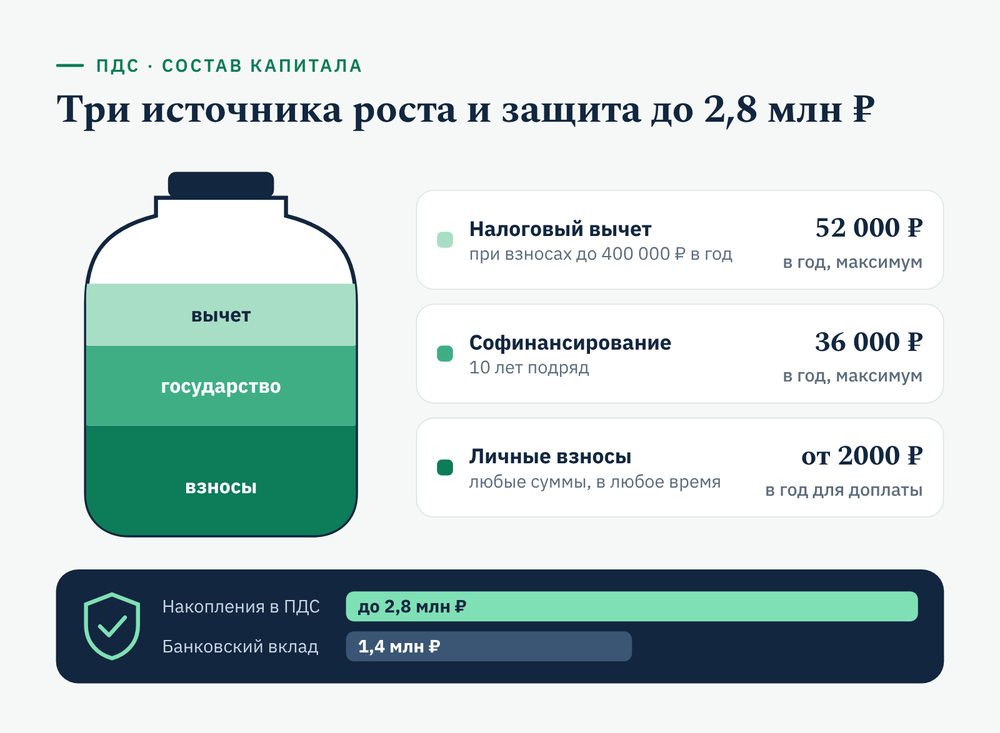
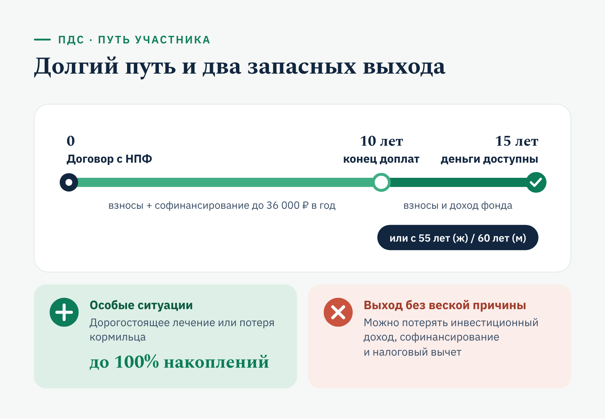
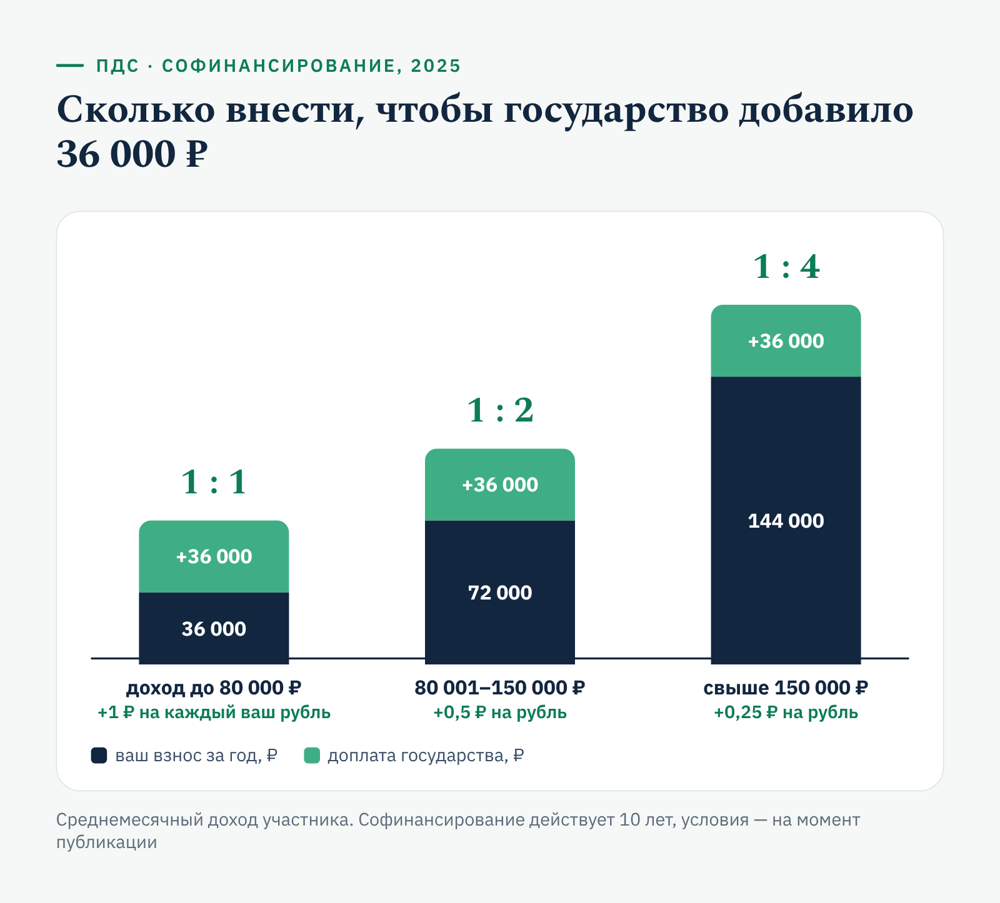
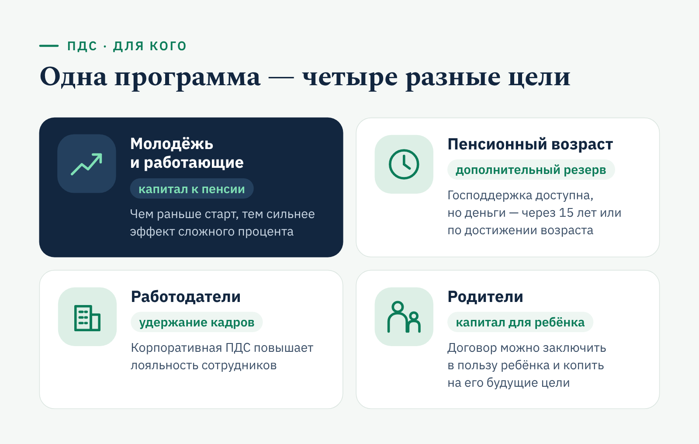

«Финуслуги» · YMYL · финансы
Статья «Финуслуг» о программе долгосрочных сбережений
«Финуслуги»finuslugi.ru
«Финуслуги» — маркетплейс финансовых продуктов, который Московская биржа запустила в 2020 году в рамках проекта Банка России. На витрине больше 40 банков с депозитами и больше 20 с кредитами; за 11 месяцев 2025 года через площадку открыли более 1 млн вкладов.
- Площадка
- Блог finuslugi.ru
- Формат
- Информационная статья
- Год
- 2024
Финансовому маркетплейсу требовался экспертный контент для блога: тексты, которые объясняют сложные продукты понятным языком и привлекают пользователей из поиска. За время сотрудничества я подготовила более 40 статей о вкладах, инвестициях и программе долгосрочных сбережений.
Задача
Рассказать о программе долгосрочных сбережений так, чтобы читатель оценил её выгоду для себя.
Решение
Свела условия программы в таблицы, показала расчёты на примерах, указала актуальность всех сумм.
Результат
Сложная программа изложена как понятная инструкция для принятия решения.
Программа долгосрочных сбережений: как работает ПДС и что даёт государство
Программа долгосрочных сбережений (ПДС) — способ сформировать капитал на будущее при поддержке государства. Участие добровольное: гражданин заключает договор с выбранным негосударственным пенсионным фондом (НПФ), и его деньги копятся на индивидуальном счёте не меньше 15 лет или до наступления пенсионного возраста. Капитал растёт сразу из нескольких источников — личных взносов, государственного софинансирования и налогового вычета.
Все суммы, лимиты и условия в статье приведены по состоянию на момент публикации (2025 год). Перед заключением договора сверьте актуальные параметры программы с фондом.
Что такое долгосрочные сбережения
Смысл программы — побудить людей регулярно пополнять индивидуальный счёт в НПФ, а фонд вкладывает эти деньги. Капитал участника складывается из трёх частей:
- личные взносы — в любом размере и с любой периодичностью;
- софинансирование от государства — до 36 000 рублей в год в течение десяти лет;
- налоговый вычет — до 52 000 рублей возврата НДФЛ в год при взносах до 400 000 рублей.
Чтобы получить софинансирование, достаточно вносить от 2000 рублей в год. Верхнего предела для пополнения счёта нет.

Деньги становятся доступны через 15 лет или по достижении 55 лет для женщин и 60 лет для мужчин. Досрочно забрать накопления можно в особых жизненных ситуациях — при дорогостоящем лечении или потере кормильца. Средства на счёте застрахованы на сумму до 2,8 млн рублей — вдвое больше, чем банковские вклады.
Как работает ПДС: основные положения
Программа построена на нескольких принципах:
- участие только добровольное;
- договор заключается с фондом, который человек выбирает сам, изучив условия и репутацию;
- взносы — любые, а для господдержки хватит 2000 рублей в год;
- можно получить налоговый вычет — до 52 000 рублей в год при взносах 400 000 рублей;
- государство доплачивает до 36 000 рублей в год в течение десяти лет;
- накопления застрахованы на сумму до 2,8 млн рублей.
Выбирая НПФ, обращайте внимание на его инвестиционную политику, рейтинги и отзывы. Высокая доходность в прошлом не гарантирует такого же результата в будущем, но показывает, насколько грамотно фонд управляет активами.
Как оформить программу долгосрочных сбережений
Оформление проходит в пять шагов:
- Выбор фонда. Сверьте выбранный НПФ с перечнем фондов-операторов программы на официальных ресурсах.
- Заключение договора. Понадобятся паспорт и СНИЛС. Договор можно подписать в офисе или онлайн.
- Пополнение счёта. Деньги можно перечислять удобным способом — банковским переводом или через личный кабинет НПФ.
- Право на господдержку. Чтобы получить софинансирование до 36 000 рублей, нужно внести за год хотя бы 2000 рублей.
- Налоговый вычет. Документы на вычет подают в ФНС. Максимальный возврат НДФЛ — 52 000 рублей в год при взносах 400 000 рублей.
Размер комиссий зависит от политики фонда. До подписания договора уточните вознаграждение за управление и сопоставьте его с потенциальной доходностью.

Схема рассчитана на длинную дистанцию: первые десять лет на счёт, помимо личных взносов, поступает господдержка, а забрать деньги без потерь можно через 15 лет или по достижении пенсионного возраста.
Обязательна ли программа
Нет. ПДС — исключительно добровольный формат, и каждый сам решает, нужны ли ему дополнительные накопления. Возврат части налога и ежегодное софинансирование лишь стимулируют участвовать, но ни к чему не обязывают.
Условия гибкие: участник сам решает, сколько и как часто вносить, исходя из своих возможностей. Фонды предлагают разные инвестиционные стратегии — от консервативных, с упором на облигации, до более рискованных. Агрессивная стратегия может принести больший доход, но стоимость активов при ней сильнее колеблется. Консервативная даёт умеренный, зато стабильный результат.
Кому подходит программа
ПДС подходит широкому кругу людей, но выгода у каждой группы своя.
- Молодёжь и люди трудоспособного возраста. Чем раньше начать, тем сильнее эффект сложного процента. Регулярные взносы вместе с господдержкой формируют заметный резерв к пенсии.
- Люди пенсионного возраста. Могут копить и получать господдержку, но деньги станут доступны через 15 лет или по достижении установленного возраста.
- Работодатели. Корпоративные программы ПДС повышают лояльность сотрудников и помогают удерживать ценные кадры.
- Родители. Могут заключить договор в пользу ребёнка и начать копить на его будущие крупные цели.
Для всех групп работают одни и те же механизмы — личные взносы, господдержка, налоговый вычет и страхование накоплений.

Разница — в цели: у одних это прибавка к пенсии, у других — инструмент удержания сотрудников или капитал для ребёнка. А срок для всех одинаковый: деньги станут доступны через 15 лет или по достижении 55 лет для женщин и 60 лет для мужчин.
Можно ли досрочно забрать деньги из ПДС
Да, но только в определённых случаях. В особых жизненных ситуациях — при дорогостоящем лечении или потере кормильца — участник может забрать до 100% накоплений. Обстоятельства нужно подтвердить документами.
Если выйти из программы досрочно без веской причины, можно потерять инвестиционный доход и часть преимуществ — софинансирование и налоговый вычет. Поэтому решение о расторжении договора стоит взвесить заранее: программа рассчитана на длительный срок, и копить по ней имеет смысл к пенсии или минимум на 15 лет.
Перевод накопительной пенсии в ПДС
В программу можно перевести уже сформированные пенсионные накопления. Так участник объединяет их с новыми взносами и получает более крупный капитал.
Порядок перевода:
- Узнайте, где хранятся ваши пенсионные накопления — в Социальном фонде России или в НПФ.
- Обратитесь в выбранный фонд с заявлением о переводе.
- Оформите документы о зачислении средств.
- Следите за состоянием счёта и результатами инвестирования.
Многие фонды дают онлайн-доступ к счёту: в личном кабинете видно, как поступают взносы и начисляется доход. Если регулярно туда заглядывать, стратегию можно вовремя скорректировать.
Сколько добавит государство: софинансирование в 2025 году
Господдержку получают те, кто заключил договор и регулярно вносит деньги. Максимум — 36 000 рублей в год, минимальный личный взнос для её получения — 2000 рублей. Сколько нужно внести самому, чтобы получить максимум, зависит от среднемесячного дохода:
| Среднемесячный доход | Соотношение | Взнос для максимальной господдержки | Доплата государства |
|---|---|---|---|
| до 80 000 ₽ | 1 : 1 | 36 000 ₽ в год | 36 000 ₽ |
| 80 001–150 000 ₽ | 1 : 2 | 72 000 ₽ в год | 36 000 ₽ |
| свыше 150 000 ₽ | 1 : 4 | 144 000 ₽ в год | 36 000 ₽ |
Чем ниже доход, тем щедрее доплата: при зарплате до 80 000 рублей государство фактически удваивает каждый рубль взноса. Такая схема действует десять лет, а право на налоговый вычет можно использовать параллельно.

Если сложить софинансирование и вычет, при взносе 36 000 рублей в год человек с доходом до 80 000 рублей получает от государства 36 000 рублей доплаты и может вернуть 13% от взноса — ещё 4680 рублей.
Плюсы и минусы ПДС
Прежде чем подписывать договор, полезно взвесить сильные и слабые стороны программы.
Плюсы:
- Господдержка — софинансирование увеличивает накопления.
- Налоговый вычет — ежегодный возврат части НДФЛ, до 52 000 рублей.
- Страхование — накопления защищены на сумму до 2,8 млн рублей.
- Свобода выбора — участие полностью добровольное.
У этих преимуществ есть обратная сторона, и связана она прежде всего с длинным сроком программы.
Минусы:
- Деньги «заморожены» на 15 лет или до пенсионного возраста.
- Досрочно забрать накопления без особых обстоятельств невыгодно.
- Комиссии НПФ и риск невысокой доходности.
- Для людей старшего возраста программа может быть менее интересна.
Чтобы понять, выгодно ли вам участие, оцените личные финансы, цели и горизонт планирования. Длинные накопления обычно дают хороший результат, но ответственность за выбор фонда и стратегии лежит на участнике.
ПДС для людей пенсионного возраста
Участвовать в программе можно и в старшем возрасте: формат по-прежнему добровольный. Стоит прикинуть, сколько уже накоплено, собираетесь ли вы работать дальше и на что понадобятся деньги. Иногда разумнее вложить свободные деньги в инструменты с более коротким сроком.
Главный риск длинных накоплений — инфляция, которая снижает покупательную способность денег. Сравнивайте фактическую доходность фонда за несколько лет с официальными данными о росте цен: стратегия, которая стабильно обгоняет инфляцию, повышает шансы сохранить и приумножить капитал.
Долгосрочные сбережения помогают сохранить привычный уровень жизни в пожилом возрасте и выручают в сложных обстоятельствах. Главное — выбрать надёжный фонд, подходящую стратегию и не прерывать взносы.